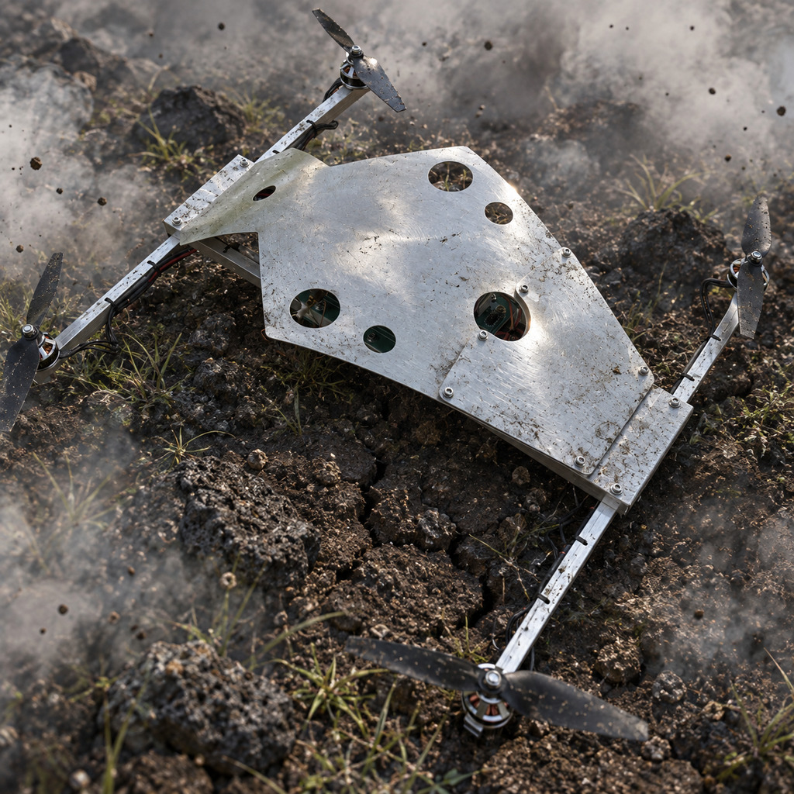
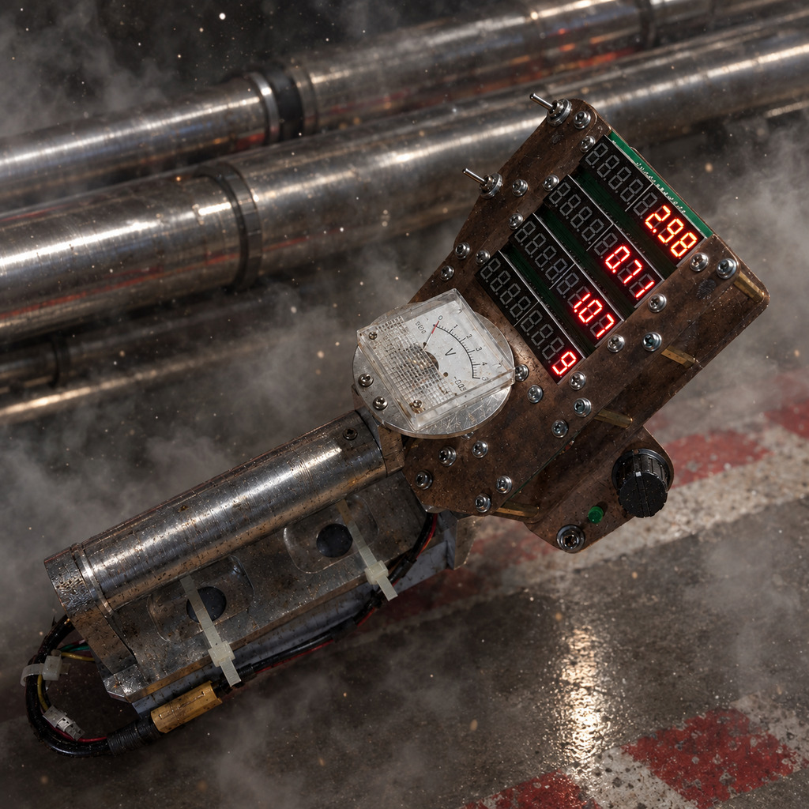

PROTOTYPE 002
Quadcopter

•VIEW LIVE
TECHNOLOGY
CUSTOM HARDWARE - CUSTOM SOFTWARE
OVERVIEW
This custom-designed quadcopter is a high-performance flight control platform developed for advanced aerobatics, including 3D inverted flight. It combines an accelerometer-based stabilization algorithm, bidirectional motor rotation, and three selectable flight modes to provide precise control, maximum stabilization authority, and safe operation under different flight conditions.
 HARDWARE FEATURES
The quadcopter is equipped with reversible 3D propellers for inverted flight.
It features a low-latency, bidirectional 2.4 GHz wireless communication system with a high-sensitivity omnidirectionnal antenna.
A high-speed inertial measurement unit provides low-latency sensor data updates to the MCU.
An integrated buzzer provides audible status notifications. Audible status codes provide clear feedback on system readiness, configuration updates, and communication failures.
The airframe consists of a lightweight and rigid aluminium frame.
SOFTWARE FEATURES
The flight control algorithm uses accelerometer angular velocity feedback and dynamically allocates motor output authority to maximize stabilization corrections across the entire throttle range. Adjustable stabilization gains adapt to throttle input and cyclic commands to improve control response and attitude locking during aerobatics.
Three selectable flight modes ― Full 2D, Half 2D, and Full 3D ― accommodate different piloting requirements. Full 3D mode enables in-flight motor rotation reversal through a throttle-dependant switching threshold with 5 % hysteresis, preventing unintended switching near mid-throttle.
The quadcopter and remote controller support bidirectional configuration data exchange, enabling controlled-device specific parameters to be retrieved, viewed, and updated directly from the transmitter, with changes synchronized to the quadcopter and stored in its internal memory.
Pre-flight interlocks verify radio channel reception, motor cutoff activation, and throttle position before enabling motor operation.
Safety features include battery voltage telemetry, failsafe protection, and watchdog monitoring to enhance operationnal reliability.
quadcopter.zip
•SOFTWARE DOWNLOAD
PERFORMANCE
The stabilization algorithm maximizes the available motor control range for pitch, roll, and yaw corrections, maintaining full throttle authority form 0 % to 100 % while preserving maximum correction capability across operating conditions.
Adaptative stabilization gains compensate for changes in propeller effectiveness with rotational speed and improve attitude control during demanding 3D maneuvers.
The accelerometer features 16-bit resolution and uses 32-bit floating-point arithmetic processing to maximize numerical precision, real-time computing handled by the MCU, radio communication system uses 32-bit frames with low-latency and redondancy to improve communication reliability.
The bidirectional motor control system enables inverted flight without a collective-pitch mechanism.
Fast and robust software built around a custom library.
RESULTS
The project validated the overall flight control architecture throuth extensive flight testing and pratical experience gained during the design and development process.
The results demonstrate the robustness, reliability, and performance of the onboard electronics and stabilization algorithm, enabling advanced aerobatic maneuvers, including inverted flight, while incorporating multiple flight modes and essential pre-flight and failsafe safety mechanisms.
The quacopter's advanced 3D flight capabilities make it ideal for training even the most demanding pilots.
CONTACT ME FOR MORE TECHNICAL INSIGHTS & DISCUSSION
HARDWARE FEATURES
The quadcopter is equipped with reversible 3D propellers for inverted flight.
It features a low-latency, bidirectional 2.4 GHz wireless communication system with a high-sensitivity omnidirectionnal antenna.
A high-speed inertial measurement unit provides low-latency sensor data updates to the MCU.
An integrated buzzer provides audible status notifications. Audible status codes provide clear feedback on system readiness, configuration updates, and communication failures.
The airframe consists of a lightweight and rigid aluminium frame.
SOFTWARE FEATURES
The flight control algorithm uses accelerometer angular velocity feedback and dynamically allocates motor output authority to maximize stabilization corrections across the entire throttle range. Adjustable stabilization gains adapt to throttle input and cyclic commands to improve control response and attitude locking during aerobatics.
Three selectable flight modes ― Full 2D, Half 2D, and Full 3D ― accommodate different piloting requirements. Full 3D mode enables in-flight motor rotation reversal through a throttle-dependant switching threshold with 5 % hysteresis, preventing unintended switching near mid-throttle.
The quadcopter and remote controller support bidirectional configuration data exchange, enabling controlled-device specific parameters to be retrieved, viewed, and updated directly from the transmitter, with changes synchronized to the quadcopter and stored in its internal memory.
Pre-flight interlocks verify radio channel reception, motor cutoff activation, and throttle position before enabling motor operation.
Safety features include battery voltage telemetry, failsafe protection, and watchdog monitoring to enhance operationnal reliability.
quadcopter.zip
•SOFTWARE DOWNLOAD
PERFORMANCE
The stabilization algorithm maximizes the available motor control range for pitch, roll, and yaw corrections, maintaining full throttle authority form 0 % to 100 % while preserving maximum correction capability across operating conditions.
Adaptative stabilization gains compensate for changes in propeller effectiveness with rotational speed and improve attitude control during demanding 3D maneuvers.
The accelerometer features 16-bit resolution and uses 32-bit floating-point arithmetic processing to maximize numerical precision, real-time computing handled by the MCU, radio communication system uses 32-bit frames with low-latency and redondancy to improve communication reliability.
The bidirectional motor control system enables inverted flight without a collective-pitch mechanism.
Fast and robust software built around a custom library.
RESULTS
The project validated the overall flight control architecture throuth extensive flight testing and pratical experience gained during the design and development process.
The results demonstrate the robustness, reliability, and performance of the onboard electronics and stabilization algorithm, enabling advanced aerobatic maneuvers, including inverted flight, while incorporating multiple flight modes and essential pre-flight and failsafe safety mechanisms.
The quacopter's advanced 3D flight capabilities make it ideal for training even the most demanding pilots.
CONTACT ME FOR MORE TECHNICAL INSIGHTS & DISCUSSION
Explore more ↓
(DISCOVER WHAT YOU'VE BEEN MISSING)
PROTOTYPE 003
TECHNOLOGY
Radiation detector
CUSTOM HARDWARE - CUSTOM SOFTWARE

PRINTED CIRCUIT BOARD
TECHNOLOGY
PALC 32
CUSTOM HARDWARE